„Palpitacja Serca” to niezwykle agresywny gambit szachowy, w którym białe próbują zdominować centrum planszy, wykorzystując presję na królewskim skrzydle. Taki gambit jest ryzykowny, ale może być zabójczy dla nieprzygotowanego przeciwnika.
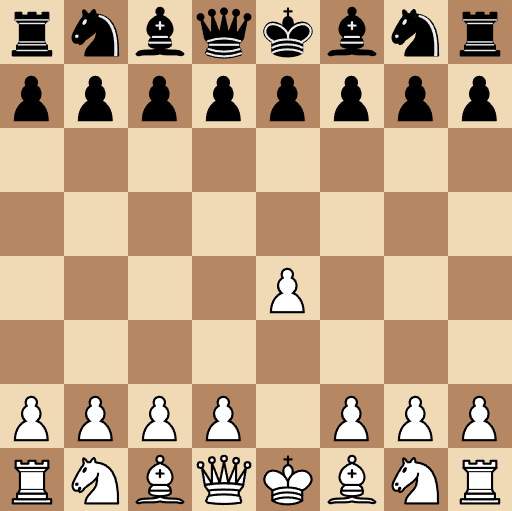
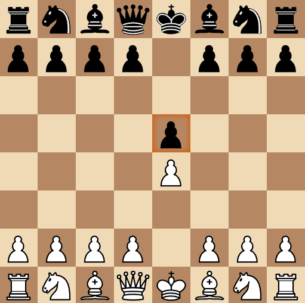
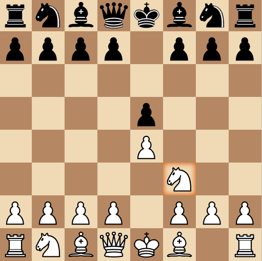
 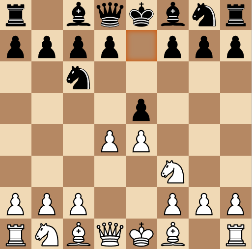
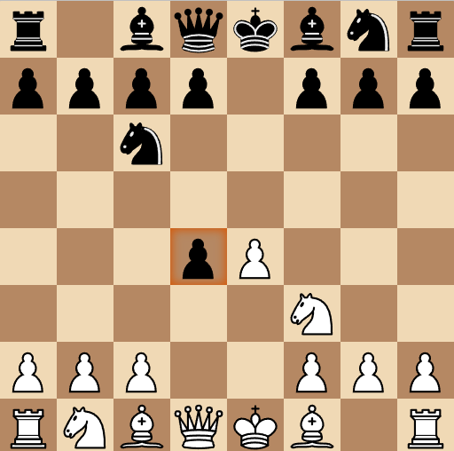
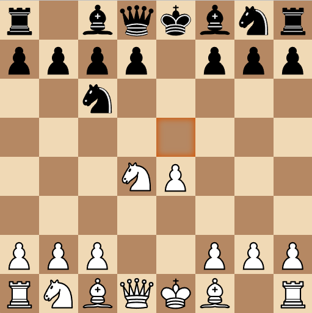
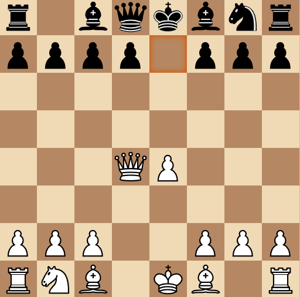
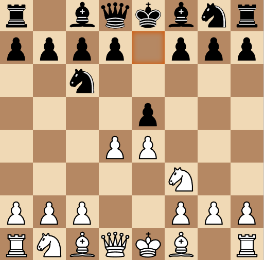
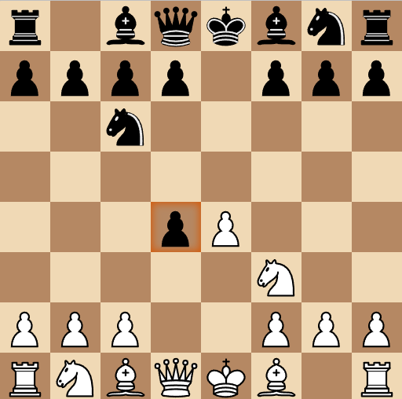
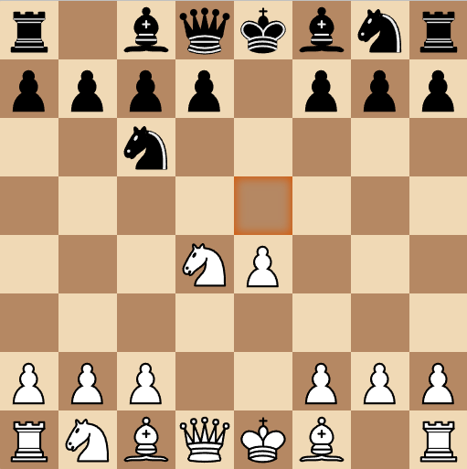
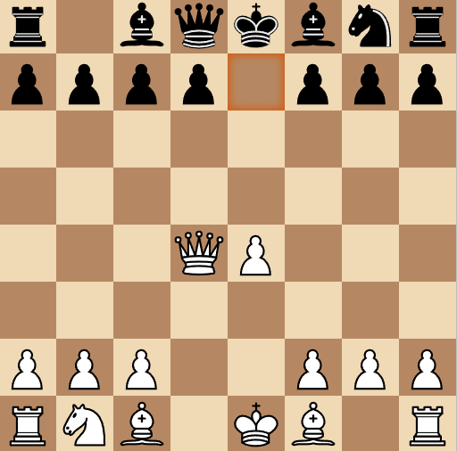
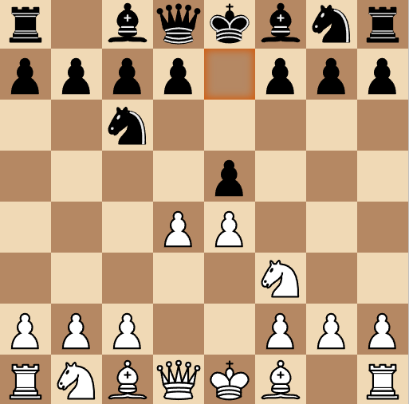
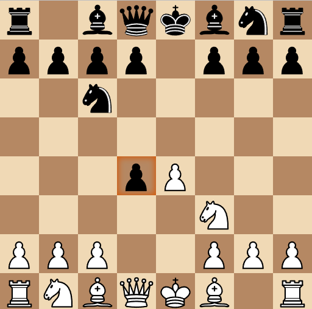
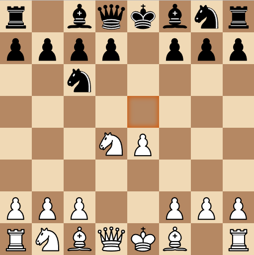
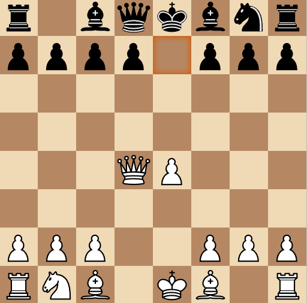